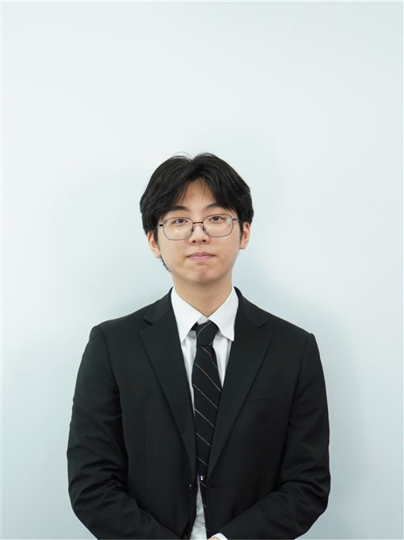
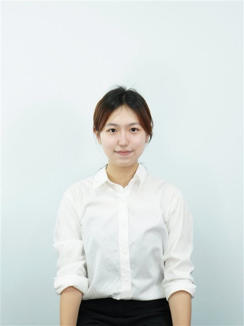

Distinguished delegates, fellow chairs, staff members and respected directors,
This is Jeongmin Lee, and it is a great honour to meet you as the chair of the Human Rights Council at KISMUN 2026.
"The river never gives up on the sea."
A river never takes the easy path. It faces stones that block its way to the sea, yet keeps moving forward, no matter how many rocks stand in its way. I hope we can approach this KISMUN 2026 the same way.
Actually, we are not meeting in easy times. Wars are unfolding across the world, and countless political conflicts are threatening us. In short, this is a time when the UNHRC's role is more crucial than ever.
Like the river, our committee, the UNHRC, will move forward to the sea alongside many hurdles throughout this conference. As the chair of the UNHRC, I will do my best to help all of the delegates reach that wide ocean and value their voice.
Best,
Jeongmin Lee
Head Chair of the United Nations Human Rights Council
KISMUN 2026

Honorable chairs, esteemed delegates, fellow staff members and respected directors. This is Yewon Jung and it is an absolute honor to serve as your Deputy Chair of the United Nations Human Rights Council of KISMUN 2026.
"Twenty years from now you will be more disappointed by the things that you didn't do than by the ones you did do. So throw off the bowlines."
Having the courage to say what is right and showing the thoughts you hold out loud is not an easy decision to make. The reason it is difficult to truly say what you desire is because you already know how powerful the words you have inside are. Deep inside you already know that even a single word can be compelling enough to create a big wave inside someone else's heart changing their lives and leading them to another way. However words cannot be seen. If you do not have the courage to raise your voice and stand up in front of those who oppose you, even the most powerful and potent words will be invalid. Knowing to respect yourself and your voice is the first step you should take to change the world we live in now. The world will not change without your words that you have for this world. So learn to value your voice and voice the potential that you're holding inside. Don't hesitate and wait for the perfect timing. There will never be perfect timing. Go for the dream that's beyond you. The moment you voice your value, the world will begin to change. Do not live your live regretting the things you could have done. Do it when you can. Live the moment without fear. I truly wish that 20 years from now, when you look back at your life you can say to yourself that your lived an unregretable life. Discover your true self in kismun 2026. Your prime starts now.
Best regards,
Yewon Jung
Deputy Chair of the United Nations Human Rights Council
KISMUN 2026